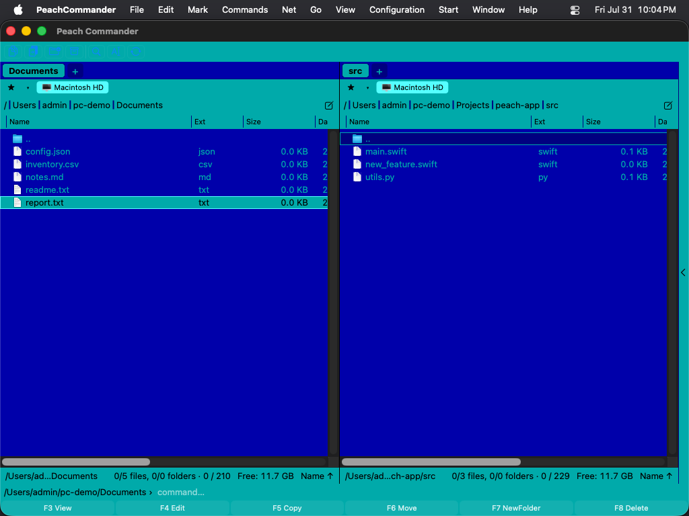

Udseende
Peach Commander kan matche udseendet af resten af din Mac eller antage sin egen stil. Du kan følge systemets lyse eller mørke indstilling (eller fremtvinge en), give filpanelerne nye farver, fremhæve filer efter type og justere listens skriftstørrelse og datoformat, så panelerne læses præcis, som du ønsker.
Vælg et farvetema
Et tema udskifter hele panelpaletten i ét trin.
- Åbn indstillingsvinduet ved at vælge Konfiguration > Indstillinger…, eller tryk på Cmd+,.
- Vælg siden Farver.
- Vælg i menuen Tema: - System (standard) — intet tema. Panelerne følger indstillingen Udseende nedenfor, præcis som hidtil. Dette er standardvalget. - Lyst / Mørkt — fastlås den indbyggede lyse eller mørke palet uanset hvad macOS gør. - Midnat — et mørkt tema, der ikke bare er gråt: dybt indigofarvede paneler med blødt blågråt tekst, hvid markørlinje og ravgul til markerede filer. - Norton Commander — det klassiske blå-cyan udseende fra den oprindelige DOS-filhåndtering, i ægte CGA-farver: blå paneler, cyan tekst, lys cyan markørlinje og gul til markerede filer.
Et tema har sit eget lyse/mørke grundlag, så ark, rullepaneler og standardkontroller passer til det — derfor er menuen Udseende nedtonet, så længe et tema er valgt. Egne panelfarver (nedenfor) har stadig forrang for temaet.

(Figur: Norton Commander-paletten — det oprindelige CGA-blå, -cyan og -gul.)Norton Commander-temaet bruger de ægte CGA-værdier fra originalen fra 1986: #0000AA blå, #00AAAA cyan, #55FFFF til markørlinjen og #FFFF55 til markerede filer. Markørbjælken vender om til mørk tekst på cyan, sådan som originalen tegnede den, mens markerede filer beholder deres gule.
 (Figur: markørbjælken vender om; markerede filer forbliver gule.)
(Figur: markørbjælken vender om; markerede filer forbliver gule.)
 (Figur: programmets egne vinduer følger også temaet.)
(Figur: programmets egne vinduer følger også temaet.)
Temaer handler kun om farver. Panelernes opbygning, rammerne og skrifterne er uændrede — Norton Commander bringer hverken de dobbelte linjerammer eller DOS-rasterskriften tilbage.
Skriv dit eget tema
Temaer er almindelige tekstfiler, én pr. tema, i mappen themes inde i din konfigurationsmappe.
- Klik på Temamappe… på siden Farver. Mappen oprettes, hvis den ikke findes, og første gang den er tom, lægger Peach Commander en kommenteret
example-norton.inii den, som viser alle de farver, du kan angive. - Kopiér filen, giv den et nyt navn, og redigér den. Filnavnet (uden
.ini) er temaets id; linjenNameer det, menuen Tema viser. - Arkivér. Åbn menuen Tema igen — dit tema står på listen. Genstart er ikke nødvendig.
Et minimalt tema fylder tre linjer:
[Theme]
Name = My Midnight
Base = dark
[Colors]
ListBackground = #101020
ListText = #C0C0D0
 (Figur: et tema indlæst fra en fil i temamappen.)
(Figur: et tema indlæst fra en fil i temamappen.)
Base vælger den indbyggede palet (light eller dark), der leverer alle de farver, du ikke nævner, så du skriver kun det, du vil ændre. Farver angives som #RRGGBB. Linjer, der begynder med ; eller #, er kommentarer.
Er noget i filen forkert, springer Peach Commander netop den linje over og beholder resten af dit tema — filen afvises ikke. Årsagen skrives til systemloggen og kan ses i Konsol, hvis du filtrerer på [theme].
Navnene light, dark, norton og system tilhører de indbyggede temaer; en fil med et af de navne springes over, så den ikke kan skygge for et medfølgende tema. Sletter du filen for det valgte tema, falder Peach Commander tilbage til System (standard).
Indstil lyst, mørkt eller systemudseende
- Åbn indstillingsvinduet ved at vælge Konfiguration > Indstillinger…, eller tryk på Cmd+,.
- Vælg siden Farver.
- Vælg én af følgende i menuen Udseende: - System (følg macOS) — matcher automatisk din Macs aktuelle lyse/mørke indstilling. - Lyst — brug altid den lyse palet. - Mørkt — brug altid den mørke palet.
 (Figur: Siden Farver: vælg et udseende og tilsidesæt individuelle panelfarver.)
(Figur: Siden Farver: vælg et udseende og tilsidesæt individuelle panelfarver.)
Tilpas panelfarver
På samme side Farver, under Brugerdefinerede panelfarver, skal du slå afkrydsningsfeltet ved siden af et element til og vælge en farve fra brønden ved siden af det:
- Tekst — fil- og mappenavnene.
- Baggrund — panelets baggrund.
- Markeret tekst — den farve, der bruges til markerede filer.
- Markørramme — omridset omkring det aktuelle emne.
Lad et afkrydsningsfelt være slået fra for at beholde den indbyggede farve for det element. Klik på Nulstil til standard for at rydde alle tilsidesættelser på én gang.
Farvelæg filer efter type
- Åbn Konfiguration > Indstillinger… og vælg siden Visning.
- Klik på Filtypefarver….
- Tilføj en regel med en navnemaske såsom
*.zipeller*.txt, og vælg derefter en farve til filer, der matcher den. - Brug Tilføj regel til flere masker; klik på Udført for at gemme eller Annullér for at kassere.
Matchende filer vises derefter i din valgte farve i begge paneler.
Justér skriftstørrelse og datoformat
På siden Visning kan du også:
- Vælge panellistens Skriftstørrelse i punkter.
- Indtaste et mønster for Datoformat for at styre, hvordan ændringsdatoer vises; lad det være tomt for at bruge din Macs regionale format. En løbende forhåndsvisning vises under feltet, mens du skriver.
- Slå Skiftevis rækkebaggrund til for zebrastriber, der gør lange lister lettere at skanne.
Genveje
| Handling | Genvej |
|---|---|
| Åbn indstillinger | Cmd+, |
Bemærkninger
- Menuen Udseende virker kun, så længe temaet er System (standard); et tema fastlægger sit eget grundlag.
- Et tema farver også programmets egne vinduer. Systemvinduer — Åbn, Arkivér, farve- og skriftvælgerne og advarsler — beholder deres standardudseende, og det samme gør vinduer, som plugins selv åbner.
- Indstillingen Udseende giver filpanelerne stil. Systemdialoger, advarsler og standardkontroller følger altid macOS.
- Den indbyggede filfremviser bruger matchende lyse og mørke paletter til syntaksfremhævning, så fremhævet kode forbliver læsbar i begge udseender.
- Brugerdefinerede farver og filtyperegler gemmes sammen med dine indstillinger og anvendes igen, hver gang du åbner appen.